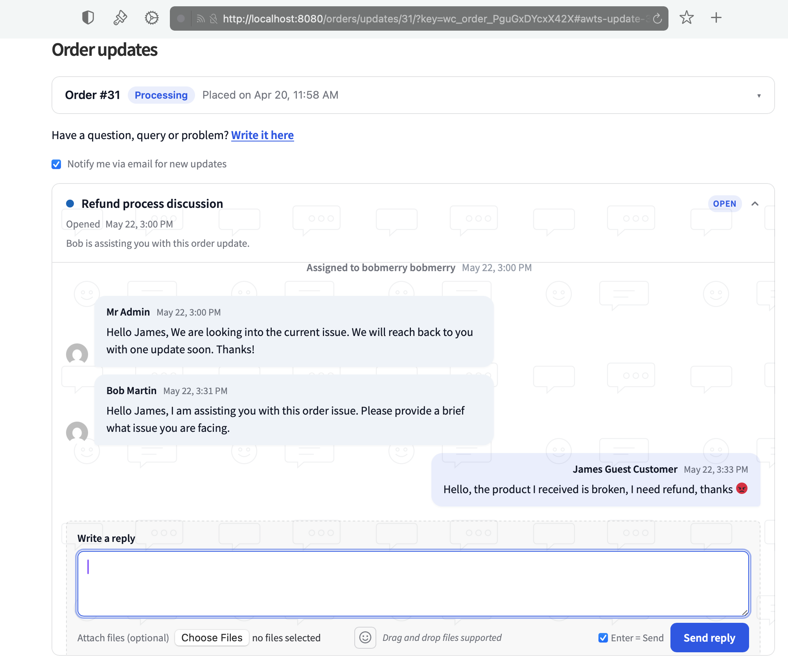

Customer notes & portal
Two views of one conversation. The Customer Notes tab on the admin order page is where your team writes. The customer portal on the storefront is where the customer reads and replies.

Customer Notes tab — visibility banner, preference toggle, conversation, composer.
The Customer Notes tab
The admin-side view of the customer thread. The yellow banner makes the audience unambiguous.
Email receiving preference
Flip individual customers out of the per-message email queue. Stored per-order (or per-user for logged-in customers).
Chat-style conversation
Staff bubbles in green, customer in blue. Sent and delivered timestamps on each bubble.

Writing a reply from the admin side.
Replying as staff
Type a reply, optionally attach files, hit Add Note. The message is saved, emailed to the customer (if their preference is on), and shows up in their portal within seconds.

The customer’s view inside My Account → View Order.
What the customer sees
The portal appears automatically on the WC My Account → View Order page. It also shows up anywhere you embed the [order_updates_portal] shortcode.
Mobile-friendly, updates in realtime via a 30-second poll.

Customer notification email — clean layout, secure link to the portal.
The notification email
Body contains the actual message + an action button to the thread. For guests, the link is pre-authenticated via order_key. For logged-in customers, the link uses their session.
Subject and body are customisable under WooCommerce → Settings → Emails.

Guest customer responding through a hashed URL — no login required.
Guest customers via hashed URL
Guests can see and reply to their thread without an account. The email link contains the order’s order_key — the credential itself.
To invalidate a shared link, regenerate the order key on the order edit page; old emails stop working immediately.
Embedding with the shortcode
[order_updates_portal]Order ID is detected from the URL automatically. Override with:
[order_updates_portal order_id="123"]Renders in Elementor, Divi, Gutenberg, and the classic editor.